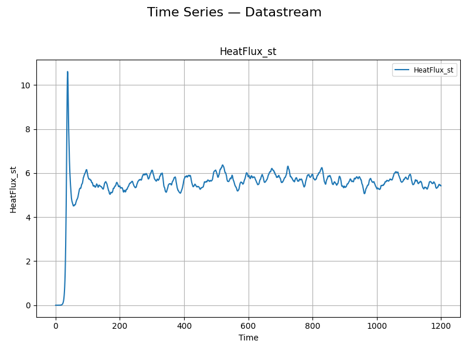
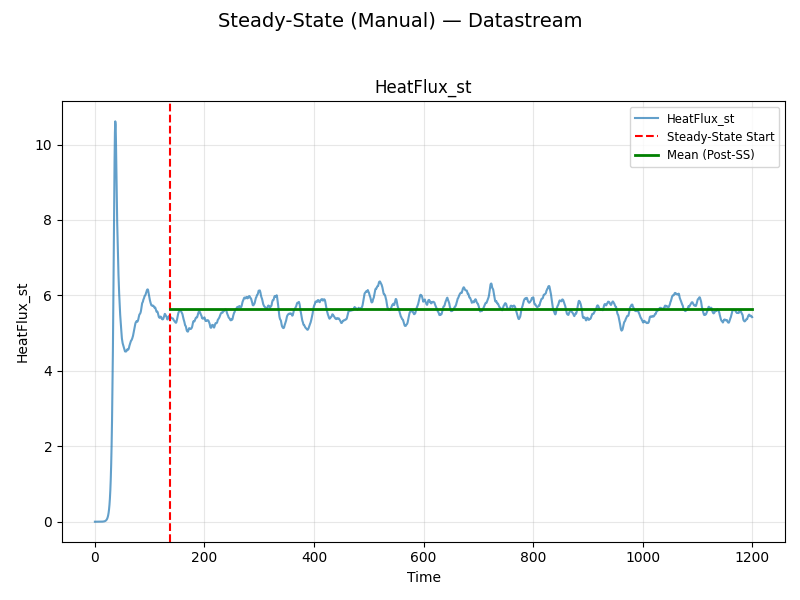
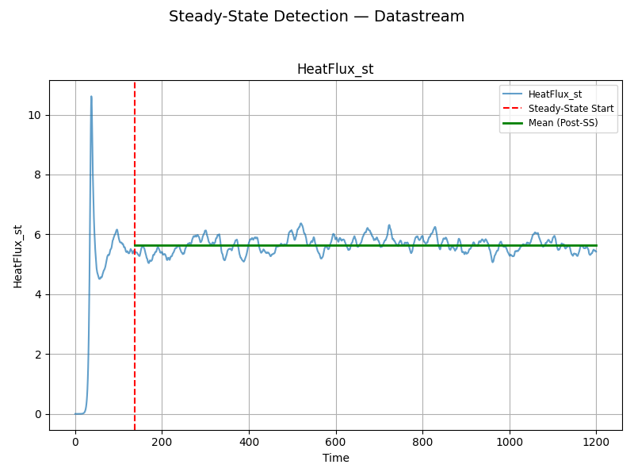
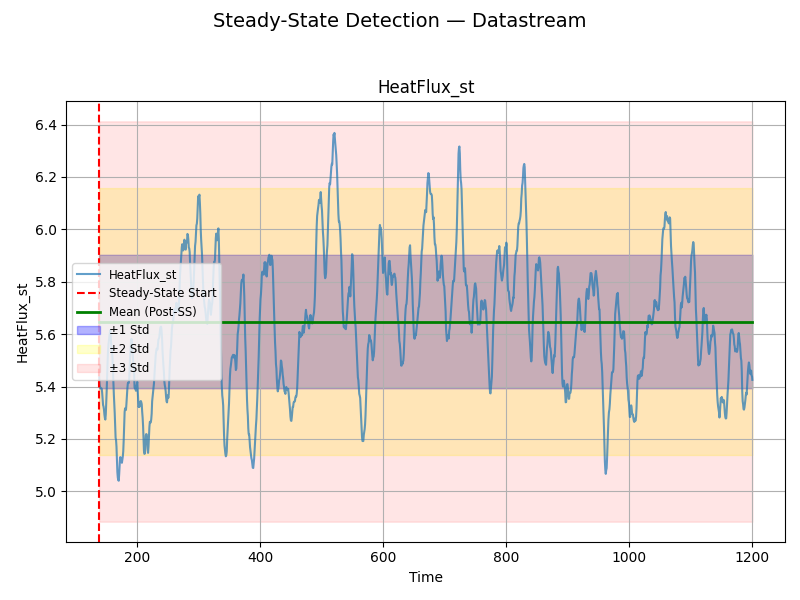
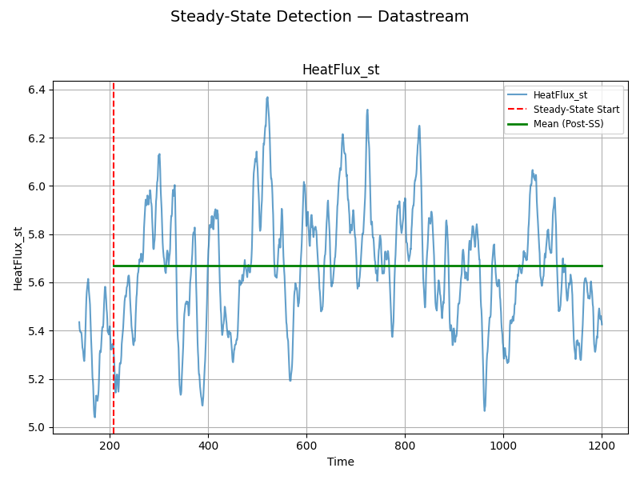
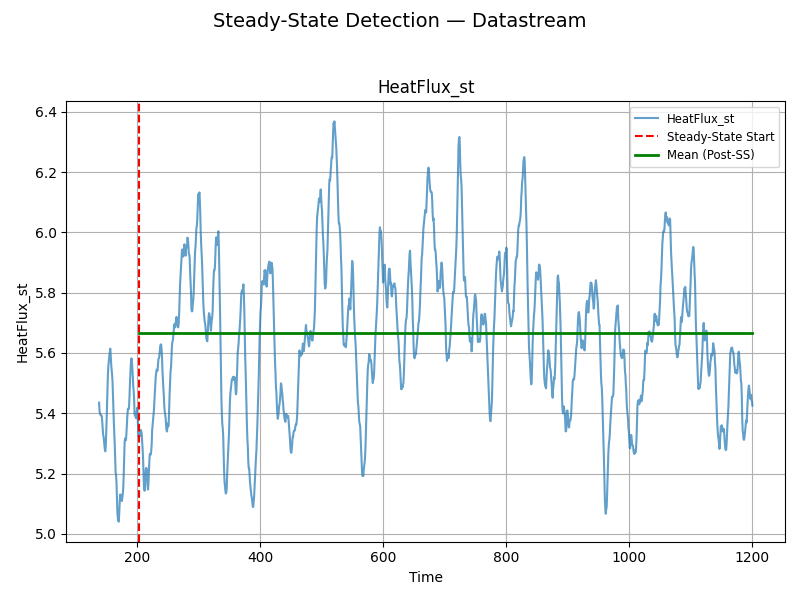
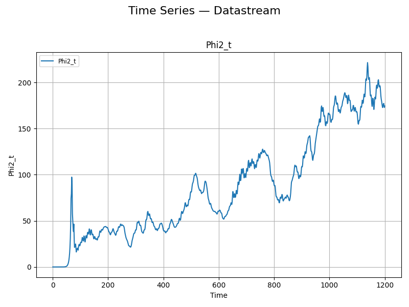
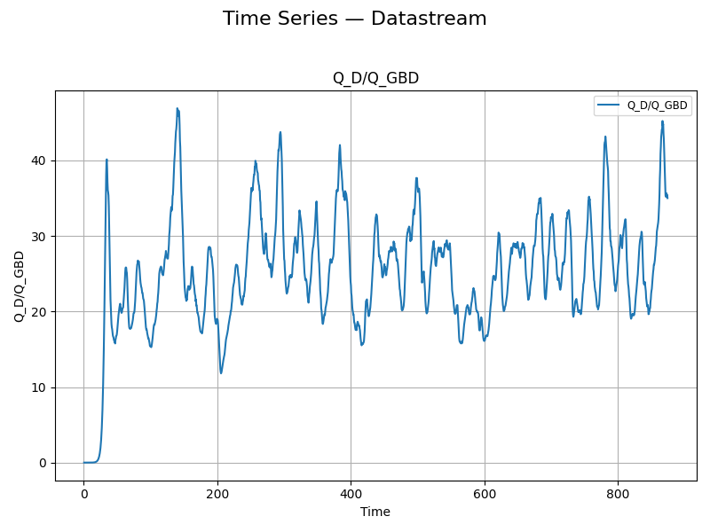
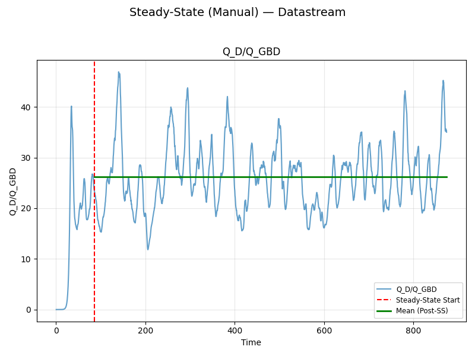

Note
Go to the end to download the full example code.
DataStream Class¶
This tutorial covers single-trace analysis with the DataStream
object on real gyrokinetic turbulence data (one GX run and one CGYRO run).
It demonstrates the core single-trace features:
Loading & plotting a raw time-series,
Stationarity testing (Augmented Dickey-Fuller),
Trimming to the steady-state portion (two equivalent calling styles),
Effective Sample Size (ESS) and autocorrelation-aware statistics,
saving / re-loading a trimmed stream and handling non-stationary inputs.
For analysing multiple runs together, see the Ensemble Analysis guide; for noisy signals where stationarity is hard to assess, see the RobustWorkflow guide.
The GX trim/statistics parameters (method="threshold", window_size=50,
start_time=100, threshold=0.1, method="non-overlapping") and the
CGYRO parameters (method="threshold", window_size=100,
threshold=0.1) follow the QUENDS analysis notebooks.
Import QUENDS
import glob
import os
import tempfile
import quends as qnds
from quends.base.trim import TrimDataStreamOperation, build_trim_strategy
from quends.postprocessing.loader import JsonLoader
from quends.postprocessing.writer import JsonWriter
COL = "HeatFlux_st" # the heat-flux observable carried by the GX files
plotter = qnds.Plotter()
GX Data Analysis¶
The GX data ships in data/gx and the CGYRO data in data/cgyro.
Single Trace¶
Input case: a single simulation output. We analyse one GX run.
Data Loading¶
gx_files = sorted(glob.glob("data/gx/ens_run_*.csv"))
single_path = gx_files[0]
ds = qnds.from_csv(single_path, COL)
print("loaded:", single_path, "| variables:", ds.variables(), "| rows:", len(ds))
ds.head()
loaded: data/gx/ens_run_0006.csv | variables: Index(['time', 'HeatFlux_st'], dtype='object') | rows: 1661
Plotting the raw trace¶
The raw trace shows the initial transient followed by a noisy steady state.
plot = plotter.trace_plot(ds, [COL], show=True)

Stationary Check¶
The Augmented Dickey-Fuller test reports whether the (raw) signal already looks stationary.
print("is_stationary (raw):", ds.is_stationary(COL))
is_stationary (raw): {'HeatFlux_st': True}
Trimming data to obtain the steady-state portion¶
QUENDS offers two equivalent ways to trim. First, the explicit
strategy/operation pattern from quends.base.trim – useful when you
want to build a strategy once and reuse it:
strat = build_trim_strategy(
method="threshold", window_size=50, start_time=100, threshold=0.1
)
trimmed = TrimDataStreamOperation(strategy=strat)(ds, column_name=COL)
print("strategy/operation -> sss_start:", trimmed.trim_metadata.get("sss_start"))
strategy/operation -> sss_start: 137.91928371809817
Second, the convenience wrapper DataStream.trim – the same canonical path
in one call. Both produce the identical steady-state start:
trimmed = ds.trim(method="threshold", threshold=0.1, window_size=50, start_time=100)
ss_start = trimmed.trim_metadata.get("sss_start")
print("ds.trim -> sss_start:", ss_start)
trimmed.head()
ds.trim -> sss_start: 137.91928371809817
Plot of the trace with the detected steady-state start¶
Plot using the exact steady-state start that the trim found
(trimmed.trim_metadata["sss_start"]) via steady_state_plot – so the
annotation matches the trim instead of re-detecting with other parameters.
The post-steady-state mean is drawn over the steady region. (For a
std / QuantileTrimStrategy trim you can pass show_std_bands=True to
add the ±1/2/3 std bands; threshold-based trims are shown without them.)
plot = plotter.steady_state_plot(ds, [COL], steady_state_start=ss_start, show=True)

Equivalently, steady_state_automatic_plot re-detects the start, but it must
be given the same trim parameters to match:
plot = plotter.steady_state_automatic_plot(
ds,
[COL],
method="threshold",
threshold=0.1,
batch_size=50,
start_time=100,
show=True,
)

Effective Sample Size¶
Autocorrelation means the trimmed series holds fewer independent samples than rows; ESS quantifies that.
print("ESS (trimmed):", trimmed.effective_sample_size())
ESS (trimmed): {'results': {'HeatFlux_st': 32}}
Statistical Analysis¶
compute_statistics returns the mean, an autocorrelation-corrected
uncertainty, a confidence interval, and the block/window diagnostics.
stats = trimmed.compute_statistics(method="non-overlapping")
print(stats)
qnds.Exporter().display_dataframe(stats)
StatsResult({'HeatFlux_st': {'mean': 5.658906909318997, 'mean_uncertainty': 0.04408995157629435, 'variance': 0.02915885744999971, 'confidence_interval': (5.57249060422946, 5.7453232144085336), 'pm_std': (5.614816957742702, 5.702996860895292), 'effective_sample_size': 32, 'window_size': 93, 'n_short_averages': 15, 'ess_blocks': 15.0, 'se_effective_n': 15.0, 'se_method': 'iid_blocks', 'independence_status': 'independent', 'independent': True, 'ljungbox_lags': [5, 10], 'ljungbox_pvalues': [0.25895643531072127, 0.26483583100584107], 'ljungbox_pvalue': 0.25895643531072127, 'ci_method': 'normal', 'confidence_level': 0.95}}, metadata={'estimator': 'single', 'columns': ['HeatFlux_st'], 'total_samples': 1470, 'schema_version': '1.0'})
HeatFlux_st
mean 5.658907
mean_uncertainty 0.04409
variance 0.029159
confidence_interval (5.57249060422946, 5.7453232144085336)
pm_std (5.614816957742702, 5.702996860895292)
effective_sample_size 32
window_size 93
n_short_averages 15
ess_blocks 15.0
se_effective_n 15.0
se_method iid_blocks
independence_status independent
independent True
ljungbox_lags [5, 10]
ljungbox_pvalues [0.25895643531072127, 0.26483583100584107]
ljungbox_pvalue 0.258956
ci_method normal
confidence_level 0.95
Save the trimmed stream¶
The postprocessing layer can serialise a DataStream (data + operation
history) to JSON with JsonWriter, and
read it back with JsonLoader.
trimmed_path = os.path.join(tempfile.mkdtemp(), "trimmed_gx.json")
JsonWriter(trimmed_path).save(trimmed)
[JsonWriter] saved -> /tmp/tmp1nvrl9wr/trimmed_gx.json
Other input scenarios¶
Already-trimmed data¶
Load the trimmed stream we just saved and re-run the pipeline on it. Because the data is already in steady state, re-trimming doubles as a check on how the different steady-state criteria behave.
reloaded = JsonLoader(trimmed_path).load()
print("reloaded rows:", len(reloaded), "| variables:", list(reloaded.data.columns))
reloaded rows: 1470 | variables: ['time', 'HeatFlux_st']
It tests as stationary – there is no transient left to remove.
print("reloaded is_stationary:", reloaded.is_stationary(COL))
reloaded is_stationary: {'HeatFlux_st': True}
Idempotent re-trim (std / Quantile)¶
The std / QuantileTrimStrategy criterion is idempotent here:
re-trimming returns the exact same data, so it recognises the whole reloaded
series as steady state. We annotate it with steady_state_automatic_plot
using the same std parameters as the re-trim – the detected start sits at
the very beginning, and because the method is std the ±1/2/3 std bands are
drawn over the steady region.
re_std = reloaded.trim(method="std", window_size=50)
identical = re_std.data.reset_index(drop=True).equals(
reloaded.data.reset_index(drop=True)
)
print("std re-trim rows:", len(re_std), "| identical to reloaded:", identical)
plot = plotter.steady_state_automatic_plot(
reloaded, [COL], method="std", batch_size=50, show=True
)

std re-trim rows: 1470 | identical to reloaded: True
Non-idempotent re-trim (threshold)¶
The threshold criterion is not idempotent: re-scanning the
already-steady series (now with start_time=0) still shaves off some
leading points, and how many depends on window_size and threshold – a
larger window or smaller threshold is stricter and removes more.
for w, th in [(20, 0.1), (50, 0.1), (100, 0.1), (50, 0.2)]:
rt = reloaded.trim(method="threshold", window_size=w, threshold=th, start_time=0)
print(
f"threshold w={w:3d} th={th}: rows={len(rt):4d} start={rt.trim_metadata.get('sss_start'):.1f}"
)
plot = plotter.steady_state_automatic_plot(
reloaded,
[COL],
method="threshold",
batch_size=50,
threshold=0.1,
start_time=0,
show=True,
)

threshold w= 20 th=0.1: rows=1451 start=151.7
threshold w= 50 th=0.1: rows=1374 start=208.0
threshold w=100 th=0.1: rows=1317 start=249.8
threshold w= 50 th=0.2: rows=1421 start=173.5
Sensitive re-trim (rolling variance)¶
The rolling_variance criterion is even more sensitive: a small threshold
rejects the entire series (0 rows), so it needs a larger threshold on this
already-steady data.
for w, th in [(50, 0.1), (50, 0.5), (50, 1.0)]:
rt = reloaded.trim(
method="rolling_variance", window_size=w, threshold=th, start_time=0
)
print(f"rolling_variance w={w} th={th}: rows={len(rt):4d}")
plot = plotter.steady_state_automatic_plot(
reloaded,
[COL],
method="rolling_variance",
batch_size=50,
threshold=1.0,
start_time=0,
show=True,
)

rolling_variance w=50 th=0.1: rows= 0
rolling_variance w=50 th=0.5: rows=1028
rolling_variance w=50 th=1.0: rows=1381
The statistics of the reloaded stream reproduce the original trim.
print("reloaded ESS :", reloaded.effective_sample_size())
print("reloaded stats:", reloaded.compute_statistics(method="non-overlapping"))
reloaded ESS : {'results': {'HeatFlux_st': 32}}
reloaded stats: StatsResult({'HeatFlux_st': {'mean': 5.658906909318997, 'mean_uncertainty': 0.04408995157629435, 'variance': 0.02915885744999971, 'confidence_interval': (5.57249060422946, 5.7453232144085336), 'pm_std': (5.614816957742702, 5.702996860895292), 'effective_sample_size': 32, 'window_size': 93, 'n_short_averages': 15, 'ess_blocks': 15.0, 'se_effective_n': 15.0, 'se_method': 'iid_blocks', 'independence_status': 'independent', 'independent': True, 'ljungbox_lags': [5, 10], 'ljungbox_pvalues': [0.25895643531072127, 0.26483583100584107], 'ljungbox_pvalue': 0.25895643531072127, 'ci_method': 'normal', 'confidence_level': 0.95}}, metadata={'estimator': 'single', 'columns': ['HeatFlux_st'], 'total_samples': 1470, 'schema_version': '1.0'})
Non-stationary / failed steady-state detection¶
Not every channel reaches steady state. Several GX observables in
tprim_2_4 are non-stationary – here Phi2_t (the electrostatic
potential energy), which keeps drifting. (Wg_st was suggested but tests as
stationary in this run, so we use a genuinely non-stationary column.) The
Augmented Dickey-Fuller test flags it, and a plain trim cannot find a clean
steady state. For signals like this, use the RobustWorkflow guide.
ds_ns = qnds.from_csv("data/gx/tprim_2_4.out.csv", "Phi2_t")
print("Phi2_t is_stationary:", ds_ns.is_stationary("Phi2_t"))
plot = plotter.trace_plot(ds_ns, ["Phi2_t"], show=True)
ns_trim = ds_ns.trim(method="threshold", threshold=0.1, window_size=50, start_time=100)
print("Phi2_t trim_metadata:", ns_trim.trim_metadata)

Phi2_t is_stationary: {'Phi2_t': False}
Phi2_t trim_metadata: {'message': "Column 'Phi2_t' is not stationary. Steady-state trimming requires stationary data."}
UQ Analysis¶
Convenience accessors return just the piece you need from the trimmed data.
Other statistical methods¶
stats = trimmed.compute_statistics(column_name=COL, method="sliding")
col_stats = stats[COL]
print("mean:", col_stats["mean"])
print("mean uncertainty:", col_stats["mean_uncertainty"])
print("confidence interval:", col_stats["confidence_interval"])
mean: 5.658906909318997
mean uncertainty: 0.04408995157629435
confidence interval: (5.57249060422946, 5.7453232144085336)
Cumulative statistics track how the estimate stabilises as more samples are included.
cumulative = trimmed.cumulative_statistics()
qnds.Exporter().display_dataframe(cumulative)
HeatFlux_st
cumulative_mean [5.355183148387097, 5.417849442473118, 5.55763...
cumulative_uncertainty [nan, 0.08862352300011332, 0.2500896275762948,...
standard_error [nan, 0.06266629408602209, 0.1443893138027071,...
window_size 93
additional_data exposes the underlying block diagnostics.
print(trimmed.additional_data(method="sliding"))
{'HeatFlux_st': {'A_est': 0.010379353209933552, 'p_est': 0.07005054176688218, 'n_current': 1378, 'current_sem': 0.006255531031767462, 'target_sem': 0.005629977928590716, 'n_target': 6200.918485619867, 'additional_samples': 4823, 'window_size': 93}}
CGYRO Data Analysis¶
The same workflow applies to CGYRO output; here the observable is
Q_D/Q_GBD and the trim parameters follow the CGYRO notebook
(method="threshold", window_size=100, threshold=0.1).
CG = "Q_D/Q_GBD"
cg = qnds.from_csv("data/cgyro/output_nu0_50.csv", CG)
print("cgyro rows:", len(cg))
cg.head()
cgyro rows: 1748
Raw trace and stationarity check.
plot = plotter.trace_plot(cg, [CG], show=True)
print("cgyro is_stationary (raw):", cg.is_stationary(CG))

cgyro is_stationary (raw): {'Q_D/Q_GBD': True}
Trim to the steady-state portion and plot it at the detected start.
cg_trimmed = cg.trim(method="threshold", window_size=100, start_time=0.0, threshold=0.1)
cg_ss = cg_trimmed.trim_metadata.get("sss_start")
print("cgyro sss_start:", cg_ss)
plot = plotter.steady_state_plot(cg, [CG], steady_state_start=cg_ss, show=True)

cgyro sss_start: 85.5
Effective sample size and statistics for the CGYRO run.
print("cgyro ESS:", cg_trimmed.effective_sample_size())
cg_stats = cg_trimmed.compute_statistics(method="non-overlapping")
print(cg_stats)
qnds.Exporter().display_dataframe(cg_stats)
cgyro ESS: {'results': {'Q_D/Q_GBD': 55}}
StatsResult({'Q_D/Q_GBD': {'mean': 26.116732499321174, 'mean_uncertainty': 0.8166885382015654, 'variance': 18.008464547604863, 'confidence_interval': (24.516022964446105, 27.717442034196242), 'pm_std': (25.30004396111961, 26.933421037522738), 'effective_sample_size': 55, 'window_size': 58, 'n_short_averages': 27, 'ess_blocks': 27.0, 'se_effective_n': 27.0, 'se_method': 'iid_blocks', 'independence_status': 'independent', 'independent': True, 'ljungbox_lags': [5, 10], 'ljungbox_pvalues': [0.7626440459670635, 0.36259692585423114], 'ljungbox_pvalue': 0.36259692585423114, 'ci_method': 'normal', 'confidence_level': 0.95}}, metadata={'estimator': 'single', 'columns': ['Q_D/Q_GBD'], 'total_samples': 1578, 'schema_version': '1.0'})
Q_D/Q_GBD
mean 26.116732
mean_uncertainty 0.816689
variance 18.008465
confidence_interval (24.516022964446105, 27.717442034196242)
pm_std (25.30004396111961, 26.933421037522738)
effective_sample_size 55
window_size 58
n_short_averages 27
ess_blocks 27.0
se_effective_n 27.0
se_method iid_blocks
independence_status independent
independent True
ljungbox_lags [5, 10]
ljungbox_pvalues [0.7626440459670635, 0.36259692585423114]
ljungbox_pvalue 0.362597
ci_method normal
confidence_level 0.95
Total running time of the script: (0 minutes 3.035 seconds)
Gallery generated by Sphinx-Gallery